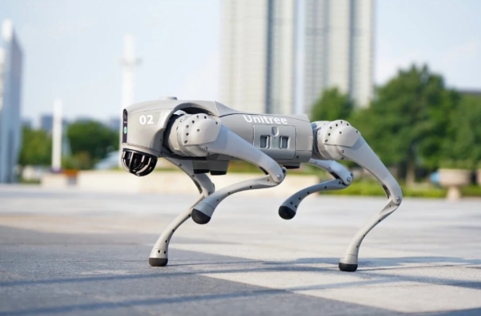

Suspiro
News
Suspiro
News

showmetech 2026
Startup chinesa Unitree Robotics, trouxe uma nova inovação tecnológica para o mercado, um cão quadrúpede projeto para acompanhar pessoas em atividades ao ar livre. Chamado de AS2, é capaz de correr, transportar equipamentos e subir em terrenos complicados, abrindo a possibilidade de se tornar um grande amigo para os aventureiros.
Esse cão robô é pensado para casos reais. Pesando cerca de 18 kg, capaz de lidar com chuva, terrenos difíceis, e tudo que compõem o contexto de trilhas e expedições.
Consegue subir escadas, fazer longas caminhadas, funcionando como um verdadeiro parceiro de viagem. Sua tecnologia é composta por sensores, sistemas de navegação, além de ser capaz de mapear o ambiente. Outras versões dessa tecnologia podem até oferecer GPS e integração de inteligência artificial.
O objetivo que a empresa teve, é promover um bom desempenho em ambientes externos, tornando o processo mais seguro. Podendo oferecer um suporte no carregamento de suprimentos e equipamentos, mapeamento de terreno e até mesmo resgate e suporte a pessoas perdidas ou acidentadas.
Tudo isso é muito promissor, e com certeza novidades chegarão muito em breve. Muitos mochileiros que antes exploravam sozinhos, agora poderão ser acompanhados por um fiel amigo…..de metal.
Este Cão Robô Pode Revolucionar as Viagens de Aventura